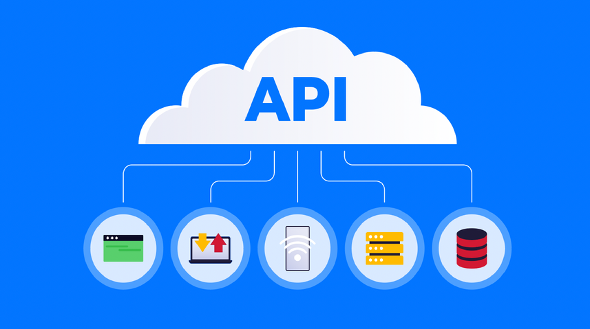
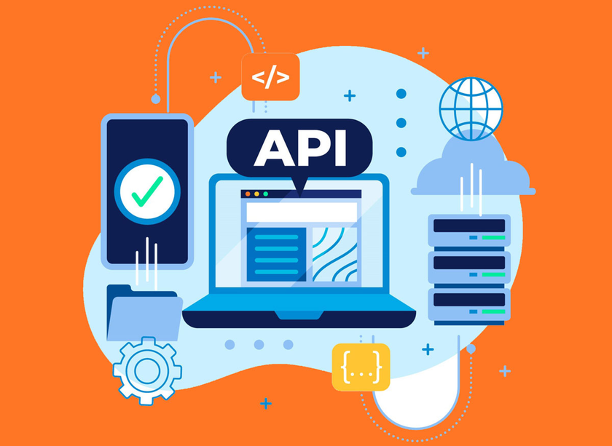

A medida que los sistemas software se hacen más complejos, se requiere una
organización de los mismos.
“Un sistema por capas es un conjunto
ordenado de subsistemas, cada uno de los cuales está construido en
términos de los que tiene por debajo, y proporciona la base de la
implementación de los que están por encima de él”
El backend se refiere a la parte de un sistema o aplicación de software que gestiona la lógica de negocio, la manipulación de datos y la comunicación con bases de datos y otros servicios. Es la "espalda" de la aplicación que no es visible para el usuario final.
El frontend es la parte de una aplicación o sitio web con la que interactúa el usuario. Se encarga de la presentación y la interfaz de usuario, mostrando información y permitiendo la interacción del usuario con la aplicación a través de la interfaz gráfica.
API (Application Programming Interfaces), interfaz de programación de aplicaciones. Se trata de un conjunto de definiciones y protocolos que se utiliza para desarrollar e integrar el software de las aplicaciones, permitiendo la comunicación entre dos aplicaciones de software a través de un conjunto de reglas.
Las API de REST y las API HTTP son productos API de RESTful. Las API de REST admiten más funciones que las API HTTP, mientras que las API HTTP están diseñadas con características mínimas para que puedan ofrecerse a un precio más bajo. Elegir las API de REST si se necesitan características como claves de API, limitación por cliente, validación de solicitudes, integración de AWS WAF o puntos de conexión de API privados. Elegir las API de HTTP si no necesitan las funciones incluidas con las API de REST.
| Definición. | Uso Principal. | Protocolos. | |
|---|---|---|---|
| API (Interfaz de Programación de Aplicaciones) | Una abstracción de procedimientos o funciones de una plataforma con el fin de ser utilizados. | Intercambio de datos y servicios entre aplicaciones. | REST y SOAP. |
| Webservice (Servicio Web) | Un Webservice es un conjunto de protocolos y estándares que permiten la comunicación entre aplicaciones a través de la web. | Ofrecer funcionalidades y servicios a otras aplicaciones. | REST y SOAP. |
| SDK (Kit de Desarrollo de Software) | Un SDK es un conjunto de herramientas, bibliotecas y documentación que facilita el desarrollo de aplicaciones para una plataforma específica. | Facilitar el desarrollo de aplicaciones específicas para una plataforma o servicio. |